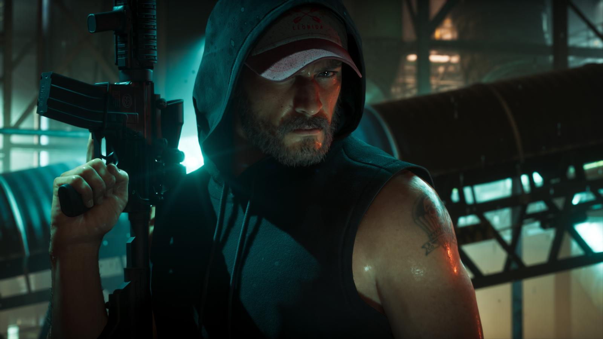

Слух: GTA 6 выйдет на ПК одновременно с консолями
Обновлено:

Коротко
- Слух: ПК-версия выйдет в один день с консольной.
- Официально на 19 ноября — только консоли.
🔴 Опровергнуто
19 ноября выходят только версии для PS5 и Xbox Series X|S. ПК-версию Rockstar не анонсировала.
Что говорят
ПК-игроки надеются, что в этот раз Rockstar не заставит их ждать.
Что известно на самом деле
Платформы на релизе — PS5 и Xbox Series X|S. GTA 5 вышла на ПК через 1,5 года, RDR 2 — через год. GTA 6 на ПК: когда выйдет
Наш вывод
🔴 Опровергнуто — на момент публикации. Если Rockstar объявит ПК-версию, обновим статус.
Источники: Rockstar Games — официальный сайт GTA VI.